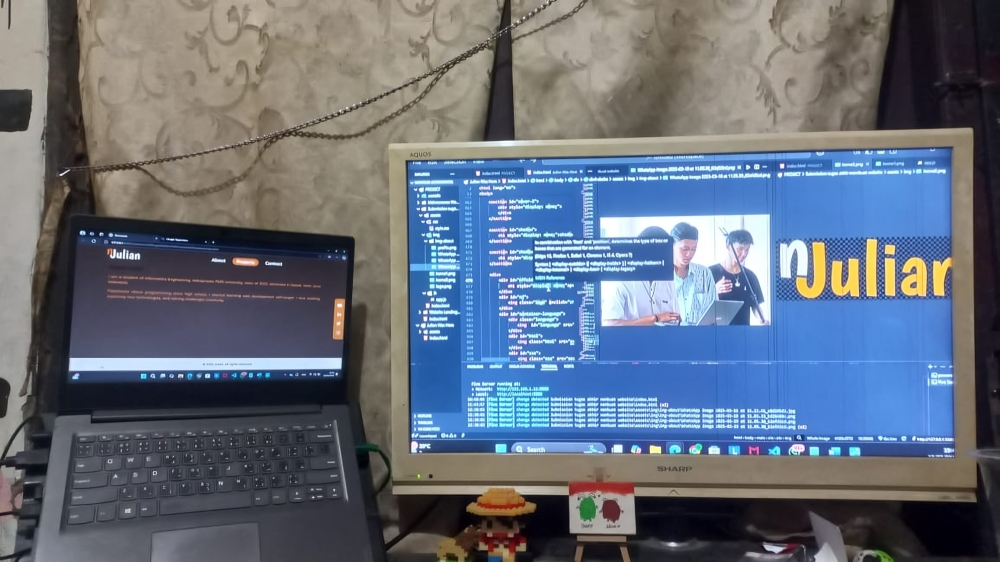
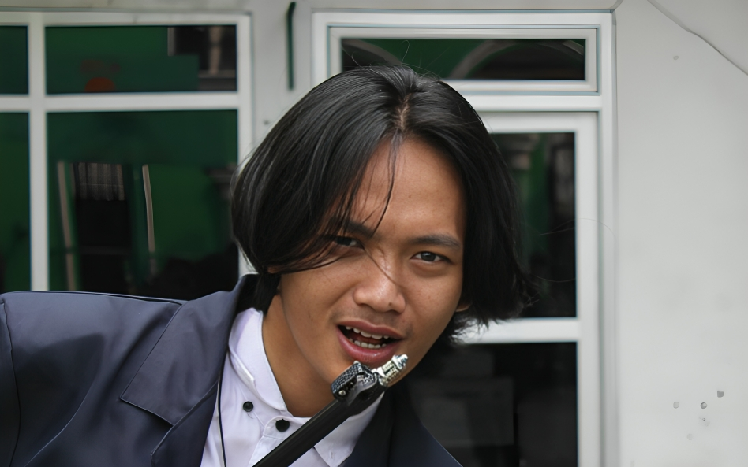
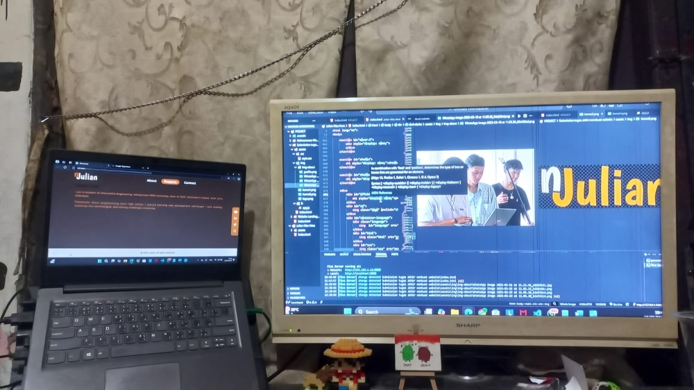
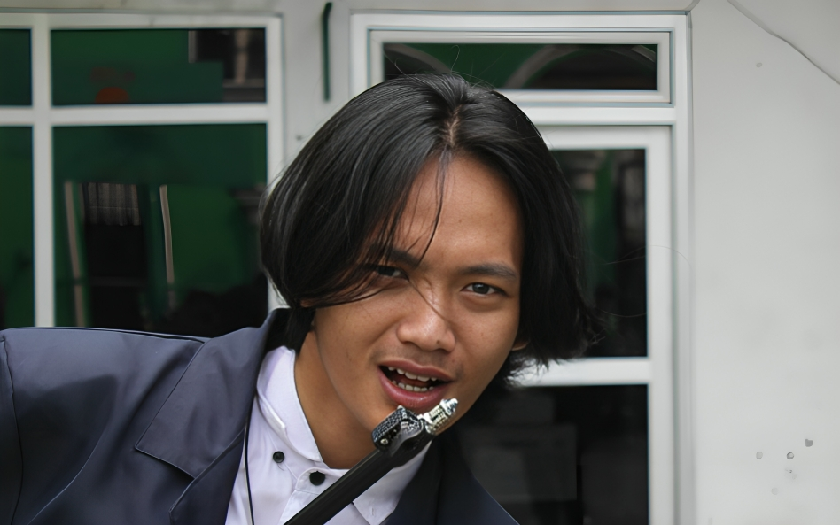

Julian Was Here
Panggil saya Julian, saya adalah seorang pembelajar teknologi yang terus berkembang. Dengan semangat eksplorasi dan inovasi, saya terus mencari cara untuk menciptakan dampak positif di dunia digital. Setiap langkah kecil membawa perubahan besar. Belajar, berkembang, dan terus maju adalah kunci untuk menciptakan masa depan yang lebih baik. Saya adalah seorang developer yang sedang belajar dan berkembang di dunia pemrograman. Dengan semangat pantang menyerah, saya percaya bahwa teknologi dapat mengubah dunia menjadi lebih baik.
"Julian meninggalkan jejak di sini.
Jika kamu membaca ini, salam engineering!"
 


